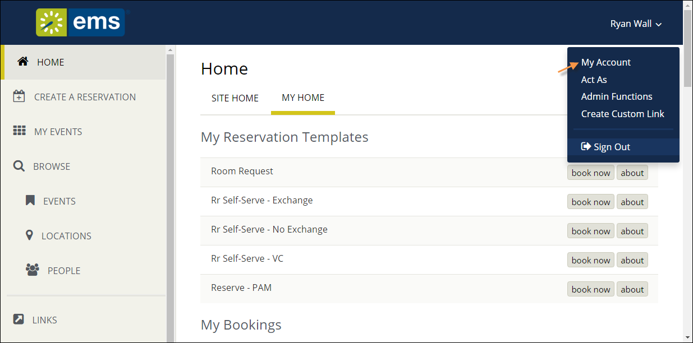
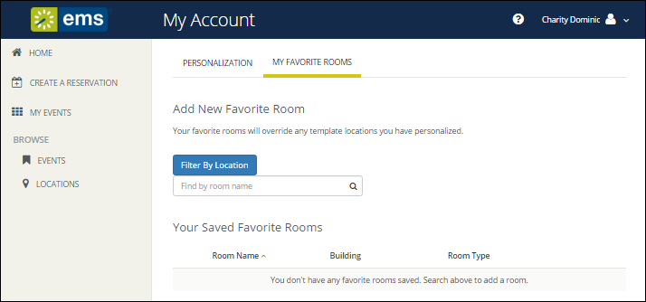
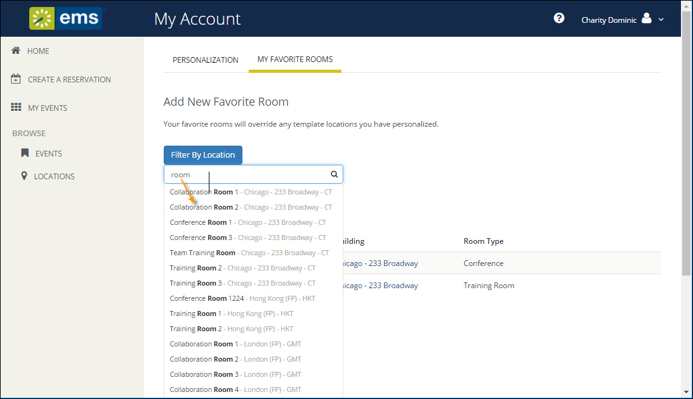

The User Options page opens, showing tabs along the top where you can customize your user profile.


You can filter your search results by clicking Filter by Location, which presents a list of locations by Building or view. Select the locations filters you want to apply (or search by keyword), and then click Update Locations. This filters the results of your keyword search on the Add New Favorite Room dialog (above). Your filter settings are saved, and you will have to go back in and remove them if you want to expand search results beyond these locations.

Once you have established favorites, EMS Web App uses these to filter your search results when you search for available space during the reservation process.
To remove a favorite, click X next to the room in Your Saved Favorite Rooms.